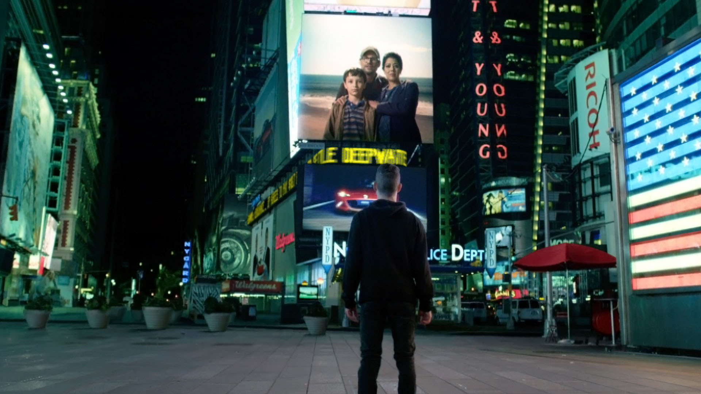
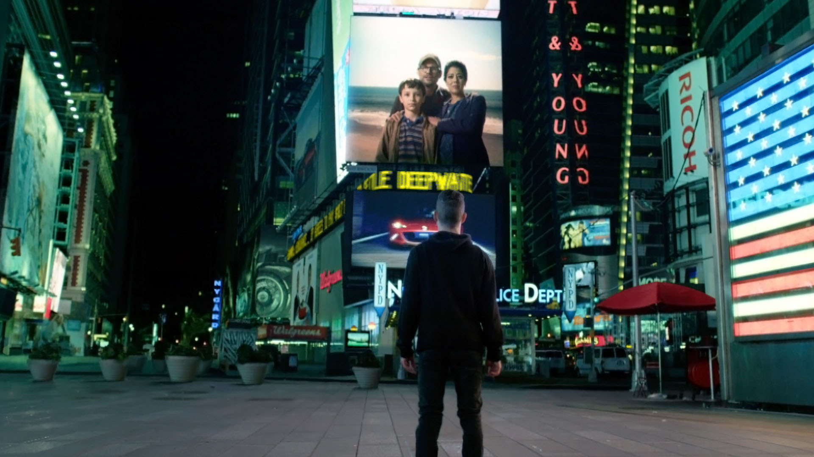

Elliot Alderson es un prodigioso pero trastornado hacker cibernético. A través de sus ojos, el espectador es testigo de su lucha contra la alienación social y su oscuro conflicto interno mientras navega por las complejidades de una sociedad profundamente dividida. La serie ofrece una mirada profunda en la mente de Elliot, quien utiliza sus habilidades informáticas para exponer la corrupción y la avaricia que plagan a las grandes corporaciones y al sistema financiero global. Sin embargo, en medio de su lucha por la justicia en un mundo donde el hackeo se convierte en su arma de elección, Elliot se encuentra en una encrucijada inquietante con un personaje enigmático llamado Mr. Robot, cuyas motivaciones y misterios ocultos arrojan sombras aún más profundas en su viaje.
El punto culminante de la serie es el ambicioso plan de Fsociety, dirigido por Elliot y su misterioso líder, Mr. Robot. Juntos, desencadenan un hackeo mundial de proporciones épicas destinado a borrar todas las deudas de la sociedad y desestabilizar a las élites corporativas que controlan el mundo. Este acto de rebeldía digital provoca una serie de eventos cataclísmicos que sacuden los cimientos del orden establecido, arrojando a Elliot y a sus aliados a un caos incontrolable. La serie explora las complejas implicaciones éticas y morales de sus acciones mientras se debate si su revolución es un acto heroico o una peligrosa anarquía.
A lo largo de "Mr. Robot", la trama se adentra en un mundo de conspiraciones, traiciones y revelaciones sorprendentes que mantienen a los espectadores en vilo. La serie desafía constantemente las percepciones y la realidad, llevando a Elliot y a la audiencia por un laberinto de engaños y misterios. La historia no solo se trata de hackeos y tecnología, sino también de la lucha de un hombre por encontrar su lugar en un mundo digitalizado mientras se enfrenta a las sombras de su propia mente y las consecuencias imprevistas de sus acciones.


 
